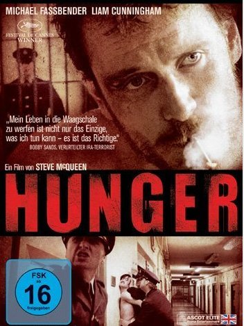

| Date, Time & Location | Tue 13 Apr 2010, 6.30pm at Cinema Syndicate |
|---|---|
| Details | Hunger is an award winning film about IRA hunger striker Bobby Sands Cinema Syndicate is an anarchist film collective, open to all, showing through political and activist film that we live in an unjust world, and it needs to change. Film shows are free, Tuesday nights at Lecture Theatre 2, Arts Tower, University of Sheffield. Full programme and details on Cinema Syndicate Facebook  |